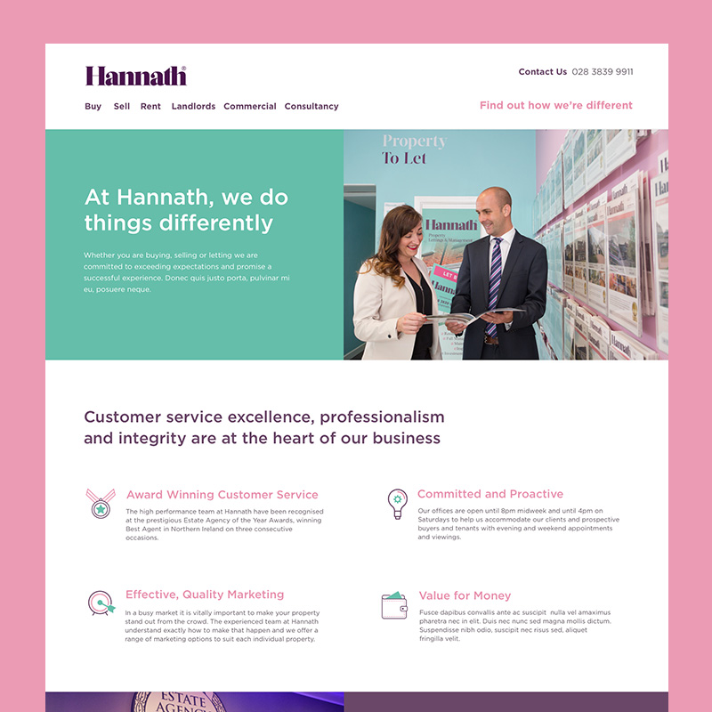
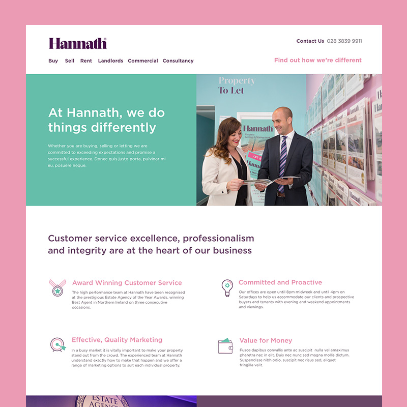

By day I design and develop websites for a range of clients with the team at Bangor based web studio, Eyekiller.
I design interfaces and websites
The process starts with a brand, client brief and kick-off meeting. From there, I grab some paper and a pencil and begin sketching some wireframes. Following this, I move to my favourite design tool, Sketch, to create the wireframes digitally. Once the wireframes have been tested and approved, I apply the visual layer, where I get creative with colours, typography and imagery.
I fight for the user
There’s nothing more frustrating than visiting a website and running into obstacles when trying to complete simple tasks like buying tickets or finding specific information. I work to make sure users can move seamlessly through a website and complete tasks like these with ease.
To do this, I carry out various user testing and research from the beginning of each project. From card sorting workshops and tree-testing to determine the best structure for the content, to conducting usability tests with people using website prototypes I’ve created using Invision.
I code
After finalising the designs, it’s time to bring them to life with HTML, CSS and Javascript. For personal or freelance projects, I love working with static-site generator Jekyll and occasionally dabble in PHP-based CMS Kirby.
You can read about my past work experience of designing and building websites on LinkedIn.